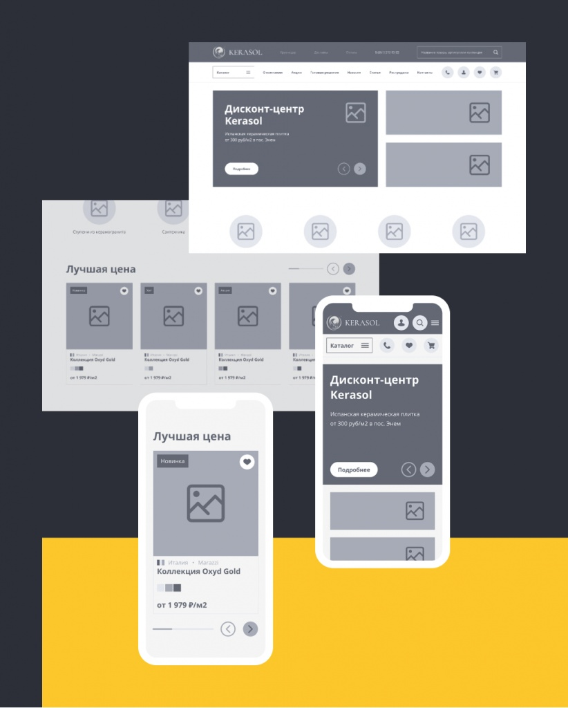
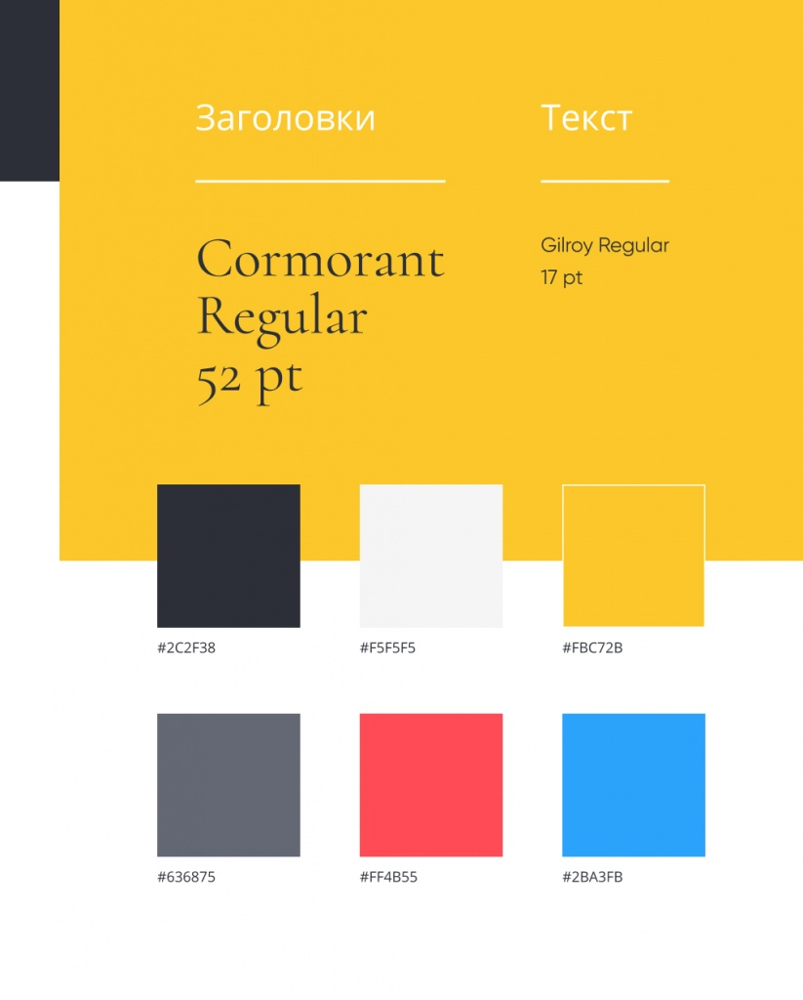
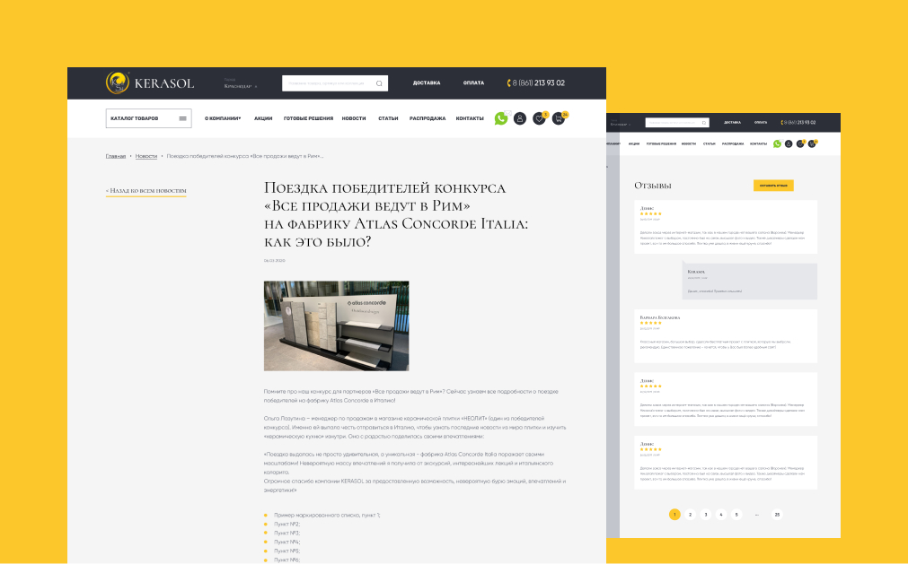
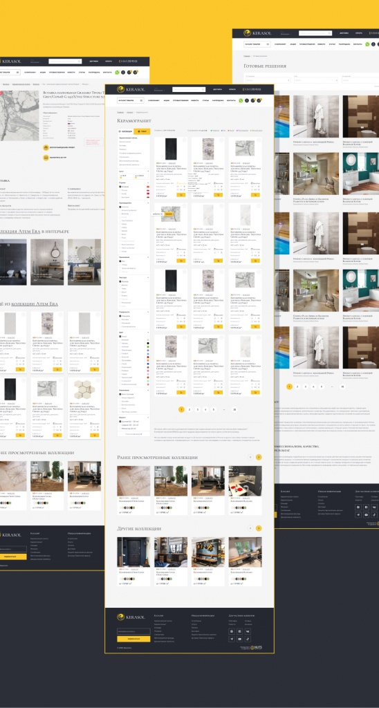

О проекте
Оглавление
О клиенте
«Керасоль» — крупный импортёр европейской строительной плитки и керамогранита, который начался как испанско-российский проект больше 10 лет назад. На сегодняшний день российская федеральная сеть включает в себя филиалы в Москве, Санкт-Петербурге, Краснодаре, Самаре, Симферополе и Пятигорске.
Кроме импортных позиций, у «Керасоль» есть и своя линия производства керамической плитки в Испании и Китае, что позволяет компании продавать продукцию практически по фабричным ценам.
Что было
С «Керасоль» мы начинали работать ещё в рамках поддержки их старого сайта, с которому на момент начала нашего сотрудничества было уже много лет. Задачи поддержки множились, масштаб этих задач неуклонно рос, пока в один момент не пришло понимание, что часть планируемых классных функций реализовать не получится ввиду ограничения как пользовательской части сайта, так и его движка, не предполагающего бесшовного внедрения новых функций.
Главным триггером к разработке нового сайта выступила невозможность (или чрезмерная трудоёмкость) внедрения новых функций на старый сайт. Некоторые изменения влекли за собой изменение архитектуры сайта, количество сбоев возрастало, а отказоустойчивость сайта падала. Эти проблемы копились, порождая негатив, фрустрацию и риск совсем уж неприятного коллапса в виде полной неработоспособности сайта. Пришло время обновлений, и клиент с воодушевлением встретил наше предложение разработать новый сайт, который отразит движение «Керасоль» вперёд.
Задача проекта
Прежде всего, нужно было разработать современный и функциональный интернет-магазин с онлайн-оплатой, который выгодно подчеркнёт статус компании и выделит её из числа конкурентов.
Основные требования:
- Понятный интерфейс, в котором пользователь не будет «плутать»;
- Сохранение структуры адресов. Старый сайт был довольно хорошо проиндексирован, поэтому нужно было не допустить того, чтобы он вылетел из выдачи в поисковых системах;
- Возможность онлайн-оплаты заказа;
- Переработка обмена данных между 1С и сайтом;
- Сохранение пользовательского опыта.
Этапы проекта
Аналитика
На всех наших проектах мы стартуем с этапа аналитики, и новый сайт «Керасоль» не стал исключением. В рамках этого этапа мы:
- Определили портреты персон — основных сегментных групп посетителей сайта;
- Проработали ещё раз совместно с заказчиком бизнес-процессы компании, представив их в виде BPMN-диаграммы;
- Переложили бизнес-процессы и логику работы сайта в вид ментальной карты в xMind;
- Презентовали проведённую работу заказчику, внесли корректировки и получили зелёный свет на продолжение работы.
Прототипирование
Задача перед нами стояла двойственная, но оттого не менее интересная. С одной стороны — разработать новый сайт, с другой же — сохранить структуру адресов и пользовательский опыт со старого сайта. На стадии прототипирования мы не сильно давали волю творческим порывам и не кромсали привычную многим клиентам «Керасоль» структуру в попытках кардинально её изменить. Хотя, что греха таить, порой руки чесались это сделать.
В прототипе сразу заложили адаптивы и мобильную версию, сохранили функциональное наполнение страниц, только немного перекроив их под новый визуальный облик сайта. Какие-то разделы сайта переехали, другие — претерпели незначительные изменения для улучшения UX. Но в целом для новых пользователей сайт не должен был стать чем-то принципиально новым — это могло их отпугнуть. Мы держали это в уме, так что этап прототипирования прошёл без заминок.

Дизайн
Основные цвета мы сохранили из фирменного стиля компании - это графитно-чёрный и жёлтый. Сознательно не стали придумывать новые оттенки, чтобы сохранить узнаваемость бренда.
Шрифты — простой гротеск Rubik для основной текстовой информации и с засечками Cormorant SC для названий карточек товаров. Гарнитуры шрифтов поддерживают несколько языковых семейств, что отлично подходило нам, поскольку множество названий на сайте представлены как на русском, так и на английском языках.

Главная страница
На главной показываем пользователю баннерный блок с самыми «горячими» предложениями компании, знакомим с представленными на сайте категориями товаров, знакомим с брендом и его преимуществами перед конкурентами
Каталог товаров и оформление заказа
Путь пользователя от выбора товаров очень прост и короток: выбрал товар и количество, добавил в корзину, перешёл на экран оформления, указал адрес и способ доставки и оплаты и — вуаля! — заказ создан и уже направляется к покупателю.
Страница товара
Мы переработали страницу товара - она стала лаконичной и понятной. Добавили отображение ранее просмотренных коллекций, информацию о способах доставки и самовывоза, предусмотрели вариант просмотра с мобильных устройств.
Внутренние страницы

Профиль
У себя в профиле пользователь может просмотреть историю и узнать статус заказа, редактировать личные данные и управлять адресами доставки
Разработка
Первым шагом мы решили уйти от использования 1C-Bitrix в качестве CMS. Мы вообще не сторонники использования её на больших проектах, а тут всё совпало - недостаточный функционал, ограниченность в реализации «хотелок», невозможность масштабирования. Было решено перенести всё управление сайта на мощные плечи October CMS. Если вы следите за нашими кейсами, вы не раз встречали упоминание этого мощного инструмента, который мы горячо любим использовать в своих проектах. Почему любим, писали тут.
Из админки можно управлять практически всем содержимым сайта — оформлением страниц, добавлением и редактированием категорий, загрузкой изображений, публикацией новостей и проектов. Туда же выгружаются и товары с остатками по каждому городу, отправляются заявки и отзывы с сайта.
Вторым шагом стал полный рефакторинг обмена данными сайта с 1С. В старой версии сайта функционал обмена был доступен «из коробки». Для новой же мы разработали API для обмена. Сайт обменивается данными о контрагентах, товарах и заказах с 1С по протоколу jSON. Выгрузку может инициировать любая из сторон, участвующих в обмене, при этом сама выгрузка занимает считанные минуты.
Что в итоге
«Керасоль» получили в своё распоряжение современный, стильный сайт, находящийся под управлением гибкой CMS. Под капотом заложен быстрый обмен с базой и возможность подключения новых модулей и разделов. Кстати, мы уже работаем над новым разделом сайта с уникальным стилем.
Если вам понравился сайт или хотите себе такой же — с радостью ждём вас к нам в офис, обсудим идеи и предложим свои за чашечкой кофе. Ну а если вы задумали ремонт дома и вам нужна качественная плитка — бегом на kerasol.ru выбирать из более чем 200 коллекций!
